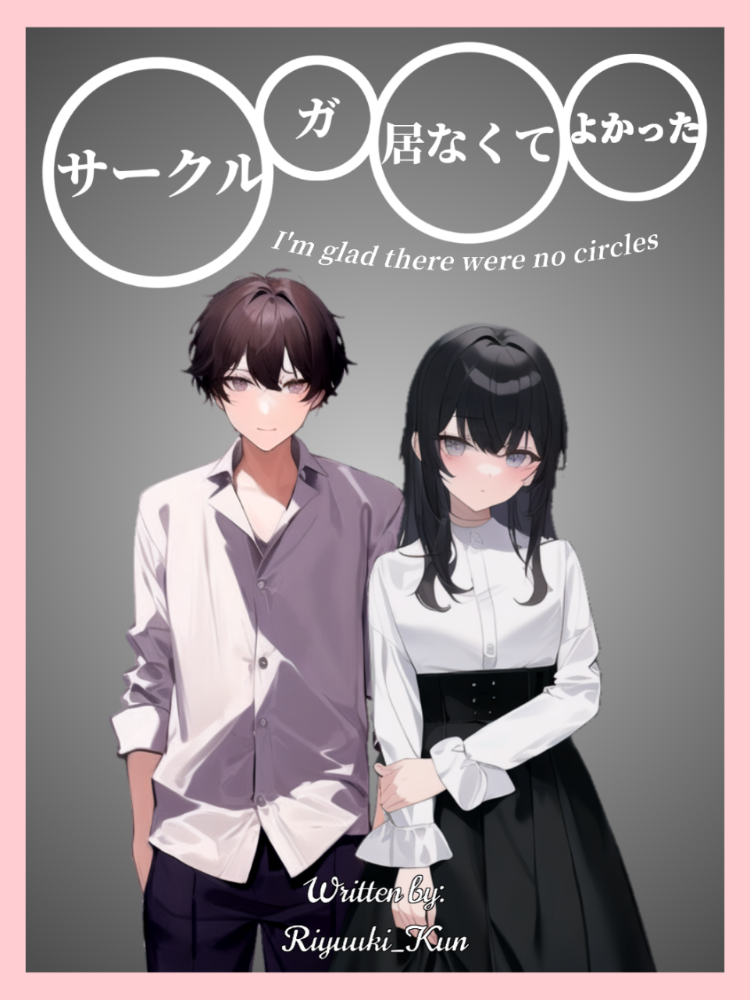

Sākuru Ga Inakute Yokatta

Information
| Japan Title | サクルが居なくて良かった |
|---|---|
| Alternative | I Glad I Don't Have Circle |
| Author | Riyuuki Hoshikawa |
| Artist | AI |
| Genre | Romance, School, Slice of Life |
| Release | Not Yet |
| Status | OnGoing |
Bookmark
| Japan Title | サクルが居なくて良かった |
|---|---|
| Alternative | I Glad I Don't Have Circle |
| Author | Riyuuki Hoshikawa |
| Artist | AI |
| Genre | Romance, School, Slice of Life |
| Release | Not Yet |
| Status | OnGoing |
Bookmark
Di zaman sekarang, anak-anak sekolahmulai dari SMP sampai SMA suka membuatkelompok pertemanan atau biasa di sebuah CIRCLE. Mereka yang tidak tergabung dalam CIRCLE biasa nya akan sulit untuk memiliki teman. Yuuki Hoshikawa seorang anak laki-laki yang dari SMP sampai dia lulus SMA tidak pernah bergabung atau diajak masuk ke dalam sebuah CIRCLE.
Menyerah di SMP dan di SMA, Yuuki berfikir bahwa dia akan mendapatkan teman di Universitas. Namun saat memasuki kelas hal yang terjadi di Sekolah menengah terjadi kembali. semua orang sudah memiliki CIRCLE nya masing-masing. Yuuki kali ini tidak sendiri, dia bertemu dengan Iris, Gadis yang dia bantu untuk menemukan ruang kelas dan ternyata mereka sekelas. Yuuki bertekad untuk dekat dengan Iris sampai dia berfikir tidak terlalu buruk untuk tidak memiliki CIRCLE.